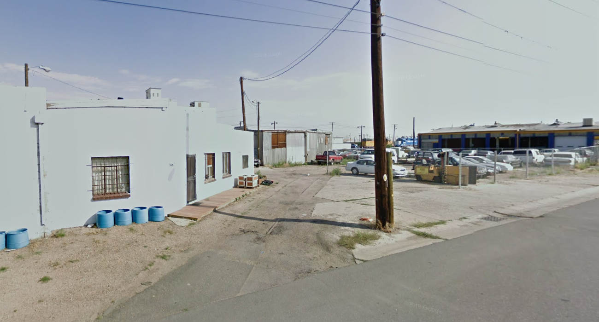
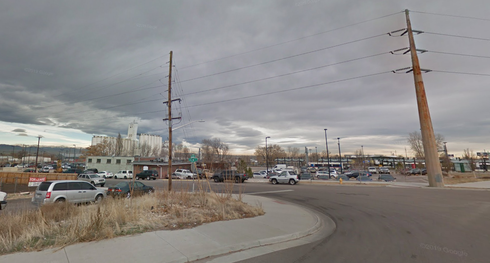

How do you feel about this neighborhood?
Hi, we are a group of researchers from the University of Texas at Austin. We are investigating how public trasit affect people's perceptions for neighborhoods.
In this survey, we will display images of certain neighborhoods and ask your opinions.
The survey will take 20 - 30 minutes to finish. After receiving your response, we will verify your answers in three days and your will receive the reward within one week.
Please contact us if you have any questions about the survey: johnsmith@mailtous.com
Thank you for taking the survey.
Instructions
Please look at the images of a neighborhood and answer the questions below the images.
- There is no right or wrong answer for each question.
- All the questions are required to answer.

